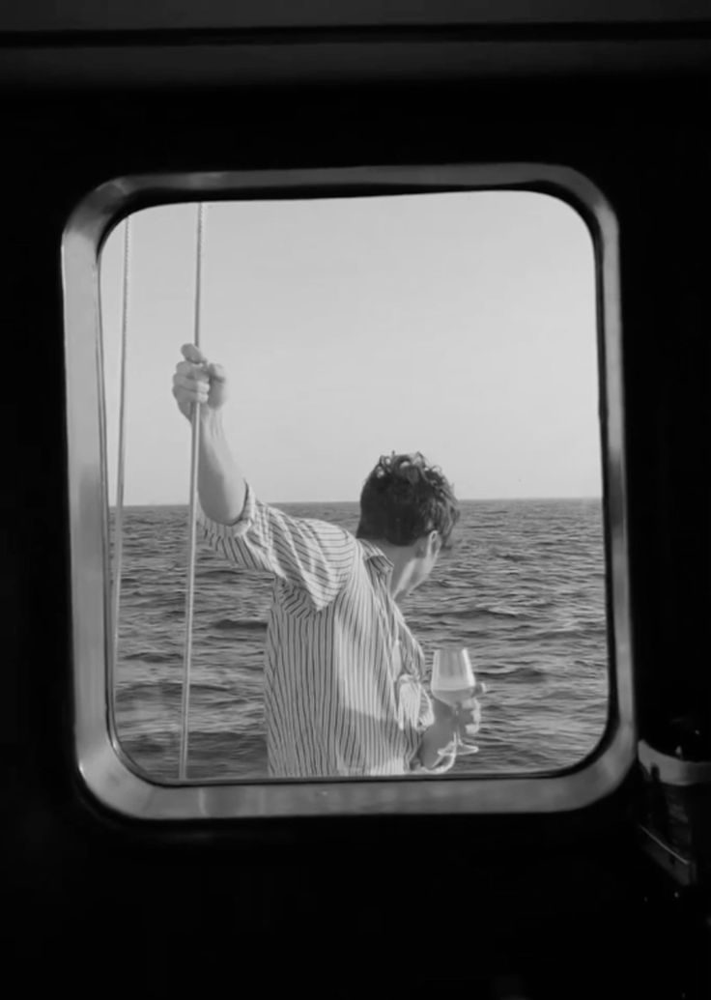
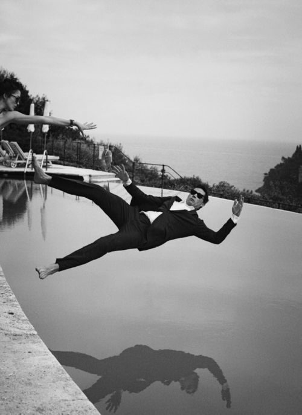
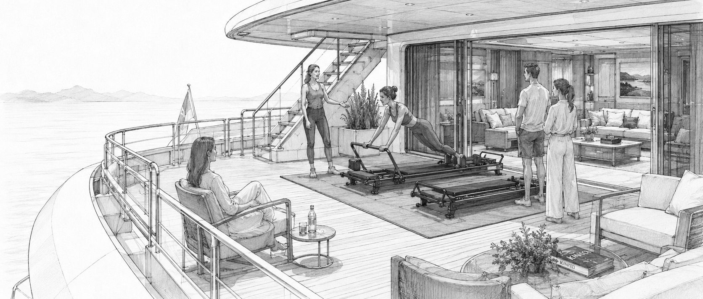
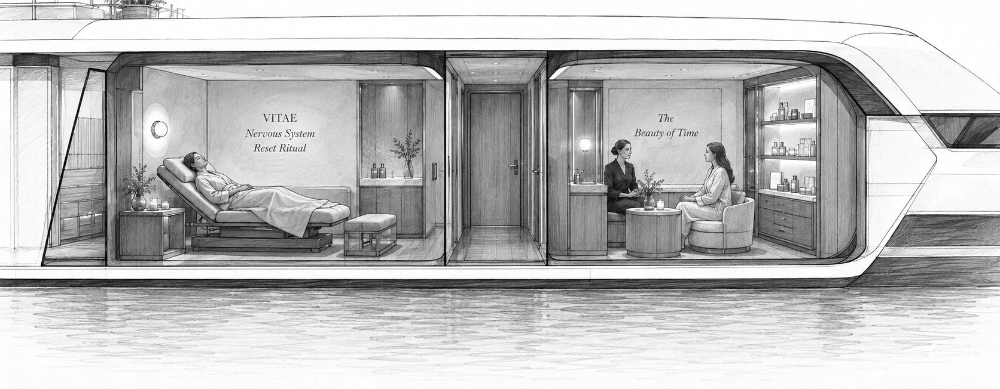
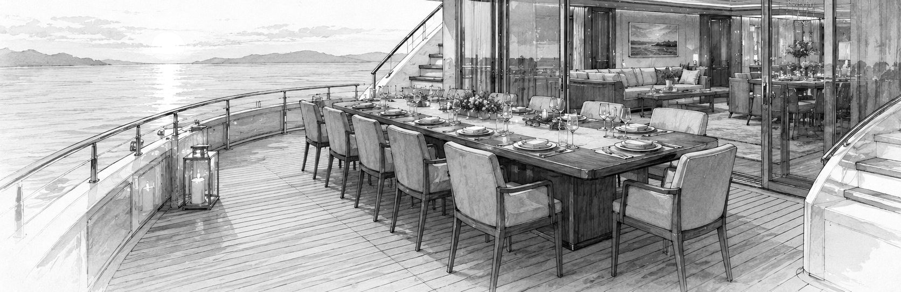
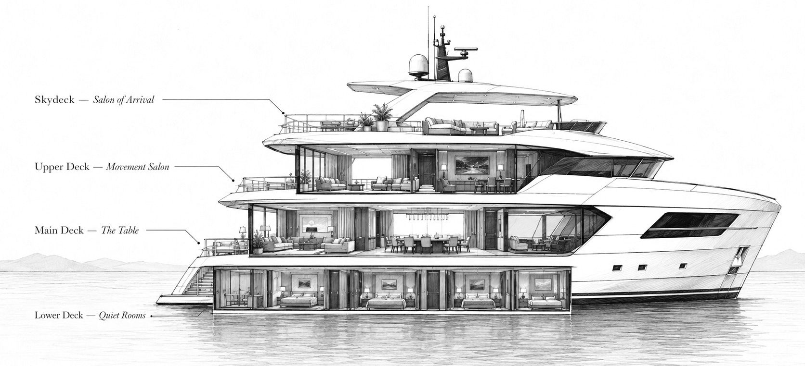
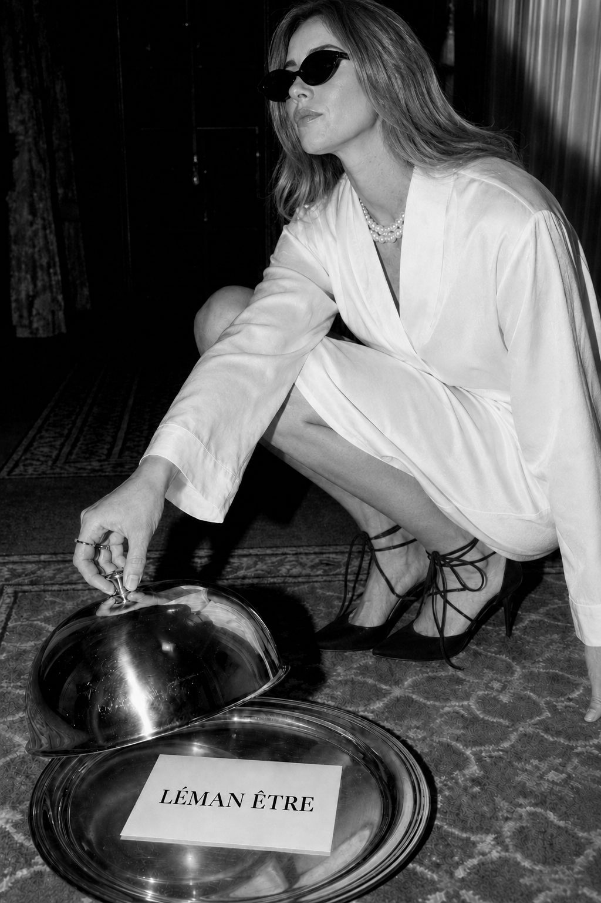

The Movement Salon
An upper-deck ritual on Lagree Megaformers — strength and control, in full view of the sea. Visible enough to draw curiosity, far enough from the table never to interrupt dinner.
Upper deck · Longevity HubDubai Marina · 18 November MMXXVI · Aboard the Sunseeker 131
Maison Léman Être · Longevity Sunseeker
A house at sea — for presence, vitality, conversation, and fully awake senses.
I · The thesis
Not escape. Presence over time.
Luxury is not the setting. It is who shares the time with you.
The world has mistaken leisure for escape. We believe it is where life is most fully lived. Beautiful places matter — but they are never the luxury. The luxury is the people, the conversation, the time.
On the eighteenth of November, the House takes to the water off Dubai Marina: elevated leisure as longevity culture, an evening made vivid through movement, regulation, beauty, food, and company.

The horizon · from inside the house

Elevated leisure · taken seriously, worn lightly
II · The three experiences
Movement above. Regulation below. The table at the heart.
An upper-deck ritual on Lagree Megaformers — strength and control, in full view of the sea. Visible enough to draw curiosity, far enough from the table never to interrupt dinner.
Upper deck · Longevity HubA quiet lower-deck return to the self — breath, regulation, sensory calm. The most intimate room of the house, entered alone or in twos.
Lower deck · VITAEThe main deck, and the main show — where the whole house gathers and the night is set. No stage, no pitch, no product. One long table and one conversation.
Main deck · The heart of the houseThe rooms, drawn
Four decks, one shared evening.



Rooms are chapters, not the book.
The book is the shared evening: arrival, the house walk, the table, one discovery, the return — and then two hours on the skydeck that belong to no programme at all. Not a yacht event with experiences, but a house at sea that comes alive as the night does.
III · The house at sea
The yacht is read as a sequence, not a maze.

IV · The shape of the evening
Three hours that build, then two that let go.
Received without check-in-desk energy. Scent, an aperitif, and a first question.
The host anchors the evening: luxury is not the setting, it is who shares the time with you.
Everyone is shown the three rooms together, before anyone discovers one alone.
Dinner begins. Seat notes and one house question carry the conversation.
Guests may enter one experience. Not all — one is enough. A sound cue brings everyone back.
The house gathers above and the evening turns. A DJ holds the skydeck for two hours — the part of the night nobody schedules.
No closing remarks. Departure with the Return Box; the House Letter follows in the morning.
V · Traces of the house

The evening leaves traces, not souvenirs.
Each one exists so the guest feels noticed rather than managed — and so the table is remembered longer than the yacht.
Why you were thought of for this table, written plainly.
One question, carried through the whole evening.
Why you sit beside these particular people.
One image selected by the House. Never a gallery dump.
Scent, object, note, and the next invitation. Never a sponsor bag.
The next morning, one short note continues the evening.
The evening, in short
18 November 2026 · Dubai Marina
The first table at sea is already being set.
Write to us with a line about yourself and who you would bring. Seats are confirmed by invitation.
Apply for an invitationhello@lemanetre.com